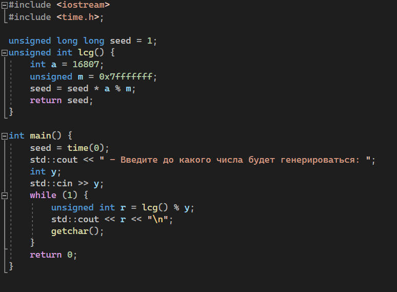
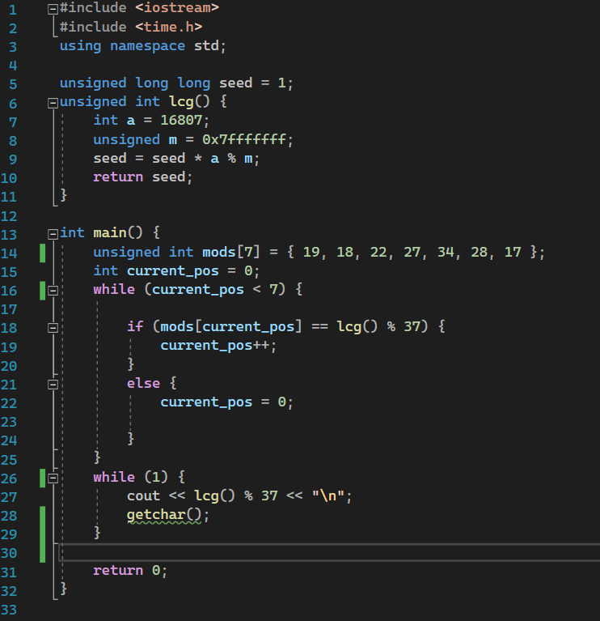
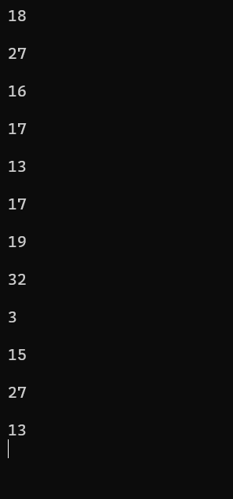

Как работает ?
Линейный конгруэнтный метод был предложен Д. Г. Лемером в 1949 году. Суть метода заключается в вычислении последовательности случайных чисел, полагая 
где m — модуль (натуральное число, относительно которого вычисляет остаток от деления; m ⩾ 2), a — множитель ( 0 ⩽ a < m ), c — приращение ( 0 ⩽ c < m) Эта последовательность называется линейной конгруэнтной последовательностью.
Пример (не самой приличный) инициализации данного метода при с = 0:
p.s. В данном примере диапазон задается вручную, а "seed" задается отн. времени.
Пробуем предсказать!
Рассмотрим на примере рулетки: нужно получить «рандомное» число от 0 до 36. Допустим сделали уже 7 бросков рулетки. Мы знаем, какие числа выпали, а так же, что порядок этих остатков будет соответствовать части массива большого массива ГПСЧ. Чем больше остатков идет вряд, тем меньше мест в именно такой комбинации они будут. Мы будем искать не место, где находиться конкретно первый остаток, а то место, где идут 7 чисел, у которых такие остатки при делении на 37. Семь цифр – минимум того, что надо знать, чтобы найти такое место. Например при 6 цифр может быть ДВА места.
Первые 7 чисел: 19, 18, 22, 27, 34, 28, 17
p.s. все сгенерированно с помощью представленного выше примера.Следующие числа, которые нам предстоит "предсказать": 18, 27, 16, 17, 13, 17, 19, 32, 3, 15
>"> Теперь мы знаем как предугадать следующие случайное число последовательности!!!
Заключение
Хотя линейный конгруэнтный метод порождает статистически хорошую псевдослучайную последовательность чисел, он не является криптографически стойким. Генераторы на основе линейного конгруэнтного метода являются предсказуемыми, поэтому их нельзя использовать в криптографии. Впервые генераторы на основе линейного конгруэнтного метода были взломаны Джимом Ридсом (Jim Reeds), а затем Джоан Бойяр. Ей удалось также вскрыть квадратические и кубические генераторы. Другие исследователи расширили идеи Бояр, разработав способы вскрытия любого полиномиального генератора. Таким образом, была доказана бесполезность генераторов на основе конгруэнтных методов для криптографии. Однако генераторы на основе линейного конгруэнтного метода сохраняют свою полезность для некриптографических приложений, например, для моделирования. Они эффективны и в большинстве используемых эмпирических тестов демонстрируют хорошие статистические характеристики.
p.s. Если вы хотите больше узнать про линейный конгруэнтный метод, советую почитать эту статью